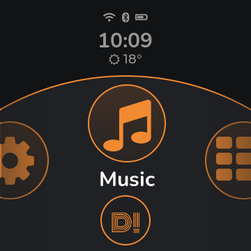
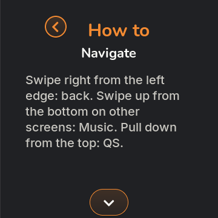
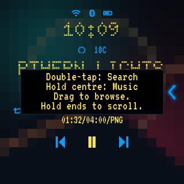
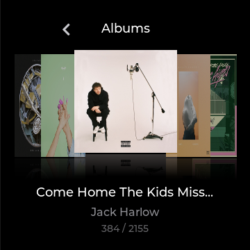
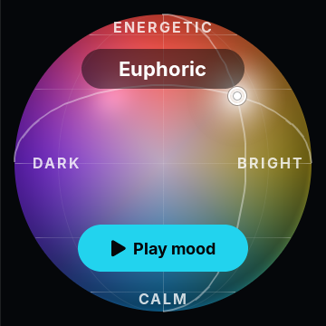
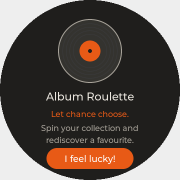

Music
Disco
For disk junkies.
Cover to cover. Colour to colour.
A little record-store magic in your pocket.
A fresh look for your Snowsky Disc
Three personalities. Your music, always within reach.
Music
Cover to cover. Colour to colour.
A little record-store magic in your pocket.
Music
Pixel type. Electric colour. That old-player feeling.
Shout-out to the SanDisk Clip+.
Music
Big type. Easy touches.
Matching menus. All five working modes in view.
Tap a small screen to try the look. Tap the big one for a closer look.
Small player. Big personality.
Your colours. Your shortcuts. Your way to play.

A little more you.

A little help, right when it helps.
Little hints meet you where you are. The built-in How to walks you through the gestures, one screen at a time.
Keep the quick guide handyBeyond the next track
Browse your albums. Play by mood. Let Roulette pick a forgotten favourite.
There’s more in the tour



And when you fancy a little break? There’s Boomshine, too.
Same Disc. Fresh energy.
Free, open source, and made for the FiiO Snowsky Disc.
First install & Linux guideAll 2.5.2 downloadsWhat’s new
Made for FiiO firmware V2.57. Read the installation guide and back up your player before you begin.